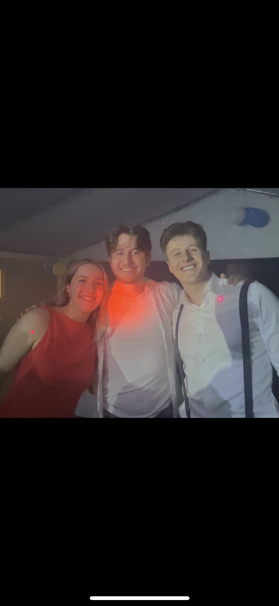
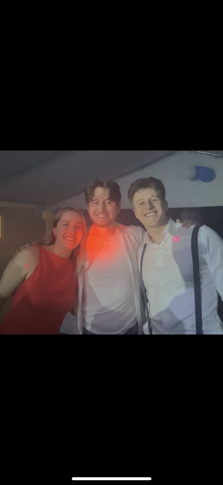

ÅR AV ERFARENHET
Med många års erfarenhet som DJ har jag hunnit med en hel del. De senaste 4 åren har jag spelat kontinuerligt på LTH och de senaste 2 på nationer i Lund med fokus på Helsingkrona där jag spelat regelbundet på deras Club Soda.
Min erfarenhet sträcker sig från att spela house och pop på stora scener inför publik i tusental till sing-along på examensfester till lounge-musik i mindre pub-miljöer.
Jag har spelat på
MINI-FESTIVALER
LTH
KLUBBAR
Helsingkronas, Göteborgs och Värmlands nation
50-ÅRSFESTER
privatpersoner
EXAMENSFESTER
Privatpersoner, LTH
SITTNINGSSLÄPP
Jesperspexet, LTH
PUBBAR
LTH
...och många fler
NÅGRA HIGHLIGHTS
UTEDISCHOT
2022-07-27 & 2023-07-26
Utedischot är ett årligt event på LTH för alla studerande och sker under mottagningen för de nya studenterna. Det är LTH:s största släpp med nästan 2000 biljetter sålda varje år med artister, mat och annat kul. År 2022 uppträdde Mange Schmidt och 2023 uppträdde Frej Larsson. Båda åren spelade jag innan och efter artisterna.


EXAMENSFEST
2024-06-15
Spelning på examensfest hos Oskar Hallberg och Maria Svensson som precis pluggat klart efter 5 år i Lund.

 

BALEFTERSLÄPP
2023-09-30
Helsingkrona nation håller årligen en bal, kallad snösjöaorden, för boende och aktiva hos dem. År 2023 började balen med mingel och middag och avslutades med ett eftersläpp där jag spelade.